Acciones durante el combate
Movimiento y evasión
El personaje que controlas se mueve en la dirección en la que muevas el stick izquierdo, y si te mueves mientras mantienes pulsado Ⓑ, podrás correr. Además, si pulsas brevemente Ⓑ, el personaje hará una voltereta hacia delante para esquivar los ataques enemigos (evasión).
Medidor de resistencia
Al correr o realizar una evasión, aparecerá un medidor de resistencia sobre la cabeza del personaje. El medidor disminuye poco a poco mientras corres y disminuye considerablemente al realizar una evasión. Cuando el medidor se vacía, el personaje se cansa y, durante un tiempo, se moverá más lentamente, así que ten cuidado.
Además, el medidor de resistencia se recupera poco a poco con el paso del tiempo y, cuando se llena por completo, podrás volver a correr y realizar evasiones.
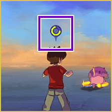
Selección de objetivo
El objetivo al que ataca tu personaje tendrá un marcador de objetivo. Al pulsar izquierda o derecha en la cruceta, o mover brevemente el stick derecho, puedes cambiar de objetivo.
Además, al pulsar el botón del stick derecho, puedes cancelar el objetivo. Si lo pulsas de nuevo, fijarás como objetivo al Yo-kai que esté cerca.
※ Cuando hay un objetivo seleccionado, el personaje que controlas se moverá siempre intentando mantener al objetivo dentro de su campo de visión.
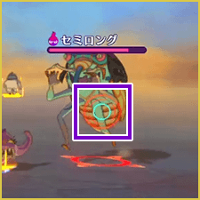
Seleccionar a un aliado como objetivo
Mientras controlas a un miembro del equipo que pueda utilizar técnicas curativas o espiritaciones positivas, puedes fijar el blanco en tus aliados. Cuando tienes seleccionado a un aliado, el marcador de objetivo se vuelve verde. También puedes cambiar el objetivo aliado pulsando el botón del stick izquierdo.
※ Al fijar a un aliado como objetivo, aparecerá un marcador en su barra del Animámetro dentro del estado y se mostrará un icono de "L" en la esquina inferior derecha.
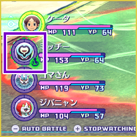
Marcador de objetivo
Los aliados atacarán al Yo-kai enemigo al que hayas colocado el "marcador de objetivo". El marcador de objetivo puede colocarse durante la pausa táctica, pero también puedes colocarlo sobre el enemigo al que estés apuntando durante el combate.
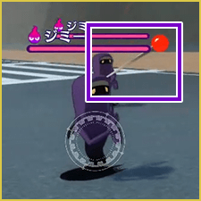
Apuntar
Mantén pulsado ZL para entrar en el modo de apuntado; aparecerá una mira blanca en el centro de la pantalla. Apuntar facilita acertar los ataques y la absorción de Yo-ki.
Además, si pulsas Ⓐ mientras apuntas, dispararás un marcador de objetivo que se clavará en el enemigo al impactar.
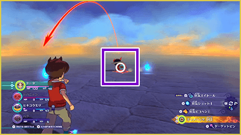
Acciones de ataque
Las acciones para atacar varían según si controlas a un Watcher o a un Yo-kai. Consulta la guía de controles de la esquina inferior derecha.
Si indica "mantener pulsado", la acción se ejecutará mientras sostengas el botón. Si indica "carga", mantén presionado el botón y suéltalo para lanzar un ataque cargado más potente.
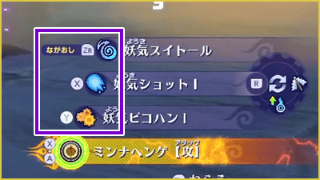
Atacar
Pulsa Ⓨ para realizar un ataque normal. Los Watchers consumen PY al atacar.
Cambiar / usar técnicas
Los personajes tienen hasta 4 técnicas. Pulsa R para cambiar entre ellas y Ⓧ para activarlas (consumen PY).
La barra circular muestra el PY restante.
※ Puedes cambiar las técnicas de los Watchers en la app "Equipo" del Yo-kai Pad.
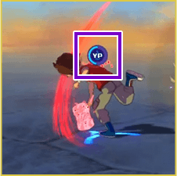
Absorción de Yo-ki (Solo Watchers)
Mantén pulsado ZR para realizar la absorción de Yo-ki. Al impactar a un Yo-kai enemigo cercano, recuperarás tu YP.
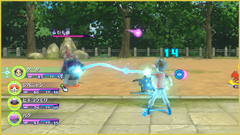
Animámetro
El medidor se llena con el paso del tiempo y al recibir daño. Cuando esté lleno, pulsa Ⓧ + Ⓐ para realizar las siguientes acciones.
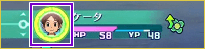
Forma Shadowside / Great (solo Yo-kai)
Los Yo-kai en forma Lightside pueden cambiar a su forma Shadowside pulsando Ⓧ + Ⓐ, cambiando su aspecto y aumentando sus estadísticas.
Otros Yo-kai adoptarán la forma Great, aumentando todos sus atributos. El medidor irá bajando gradualmente hasta volver al estado normal.
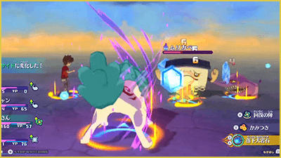
Mientras estén transformados, pueden usar su Animáximum una sola vez pulsando Ⓧ + Ⓐ. Pulsa Ⓐ con precisión o repetidamente según las indicaciones en pantalla para aumentar la tensión y potenciar el efecto.
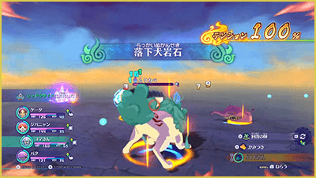
Activar Animáximum (Solo Watchers)
Pulsa Ⓧ + Ⓐ para ejecutar tu Animáximum. Pulsa Ⓐ con ritmo o rápidamente según la indicación para potenciar el ataque. El medidor se vaciará tras usarlo.
※ Algunas transformaciones como las de Touma tienen controles específicos.
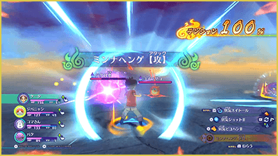
Estado de desmayo y Extracción de almas
Los Yo-kai enemigos que hayan sido lanzados por los aires mediante un ataque o cuyos PV hayan llegado a 0 pueden entrar en estado de desmayo. Si realizas una "Extracción de almas" sobre un enemigo en estado de desmayo, podrás dejarlo noqueado por completo y extraer su alma para obtenerla.
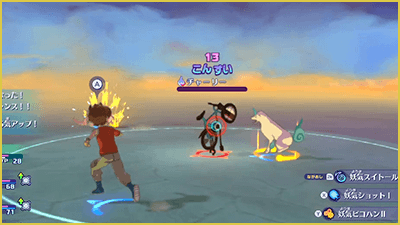
Realizar una Extracción de almas
Aparecerá un círculo alrededor del enemigo en estado de desmayo. Si pulsas Ⓐ dentro del círculo, realizarás una Extracción de almas. Mantén pulsado ZR para llenar el medidor y, cuando esté lleno, extraerás el alma.
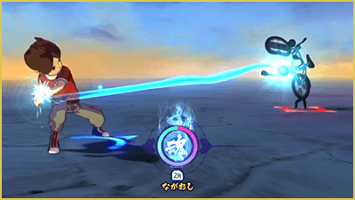
Combate automático
Pulsa el botón − durante la batalla para activar el modo de combate automático. Tu personaje luchará de forma autónoma igual que los aliados. Vuelve a pulsar − para desactivarlo.
Huir de un combate
En el borde del área donde tiene lugar el combate, si continúas corriendo hacia el exterior del área, aparecerá un medidor de huida sobre la cabeza del personaje. Cuando este se llene por completo, podrás escapar de los enemigos.
- ※ Si recibes un ataque enemigo durante el proceso o te alejas del borde del área, el medidor disminuirá.
- ※ Al huir, no podrás obtener las almas ni otros objetos que hayas conseguido durante el combate. Además, hay combates de los que no se puede huir.
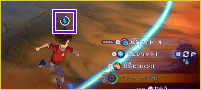
Otras acciones
Dependiendo de la situación del combate, puedes realizar las siguientes acciones.
¡Cambio!
Dependiendo de la situación del combate, un miembro de reserva puede hacer una señal de "¡Cambio!". Mientras se muestre la señal, mantén pulsado Ⓐ para llenar el medidor y, cuando esté lleno, el aliado que haya hecho la señal sustituirá a uno de los miembros que hay en combate.
※ También puedes realizar un "Cambio de miembros" durante la pausa táctica.
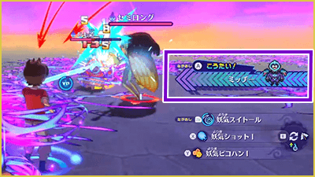
¡Ataque extra!
Dependiendo de la situación del combate, un miembro de reserva puede hacer una señal de "¡Ataque extra!". Si pulsas Ⓐ antes de que el medidor de la señal se vacíe, el miembro de reserva atacará al enemigo. El ataque adicional inflige mucho daño y además puede hacer que el enemigo entre en estado de desmayo.
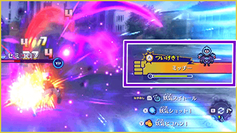
¡Bien hecho!
Cuando un aliado realiza una buena acción, puede aparecer un icono sobre su cabeza. Si pulsas Ⓐ en ese momento, puedes elogiar al aliado. El Yo-kai elogiado aumentará temporalmente su velocidad y será menos propenso a holgazanear. Además, aumentará la afinidad del Yo-kai elogiado hacia el Watcher.
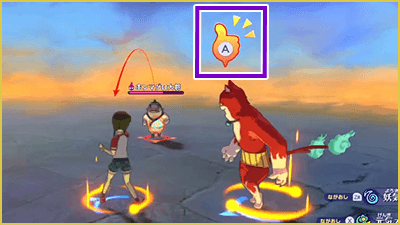